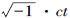
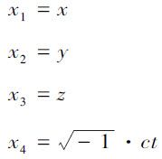
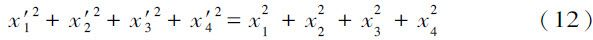
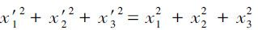

〔补充第17节〕
如果我们引用虚量

代替t 作为时间变量，我们就能够更加简单地表述洛伦兹变换的特性。据此，如果我们引入
对带撇号的坐标系K′ 也采取同样的方式，那么为洛伦兹变换公式所恒等地满足的必要条件可以表示为：

亦即通过上述“坐标”的选用，(11a)就变换为这个方程。
我们从(12)看到，虚值时间坐标x 4 与空间坐标x 1 ，x 2 ，x 3 是以完全相同的方式进入这个变换条件中的。正是由于这个事实，所以按照相对论来说，“时间”x 4 应与空间坐标x 1 ，x 2 ，x 3 以同等形式进入自然定律中去。
用“坐标”x 1 ，x 2 ，x 3 ，x 4 描述的四维连续区，闵可夫斯基称之为“世界”，他并且把代表某一事件的点称作“世界点”。这样，三维空间中发生的“事件”按照物理学的说法就成为四维“世界”的一个“存在”。
这个四维“世界”与(欧几里得)解析几何学的三维“空间”很近似。如果我们在这个“空间”引入一个具有同一原点的新的笛卡尔坐标系(x′ 1 ，x′ 2 ，x′ 3 )，那么x′ 1 ，x′ 2 ，x′ 3 就是x 1 ，x 2 ，x 3 的线性齐次函数，并且恒等地满足方程

这个方程与(12)完全类似。我们可以在形式上把闵可夫斯基“世界”看作(具有虚值时间坐标的)四维欧几里得空间；洛伦兹变换相当于坐标系在四维“世界”中的“转动”。